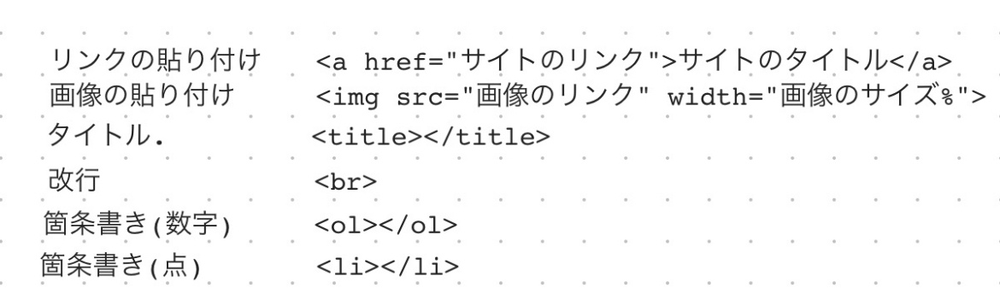

第一回まとめ
gitに関して
🤦「どのファイルを編集すればいいかわからない」
そんな時に役立つのが...git
gitとは…
ソースコードなどを管理・共有するのに使う分散型バージョン管理システム
⭐️gitを使えばいつ・誰が・どのように変更をしたのかといった変更履歴とともにファイルを管理できる！
htmlに関して
htmlとは…
「ハイパーテキスト・マークアップ・ランゲージ（Hyper Text Markup Language）」の略で、
Webページ内のテキスト情報の構成役割をコンピュータが構造的に理解できるようにするための言語を意味する。
主要タグ一覧



参考文献